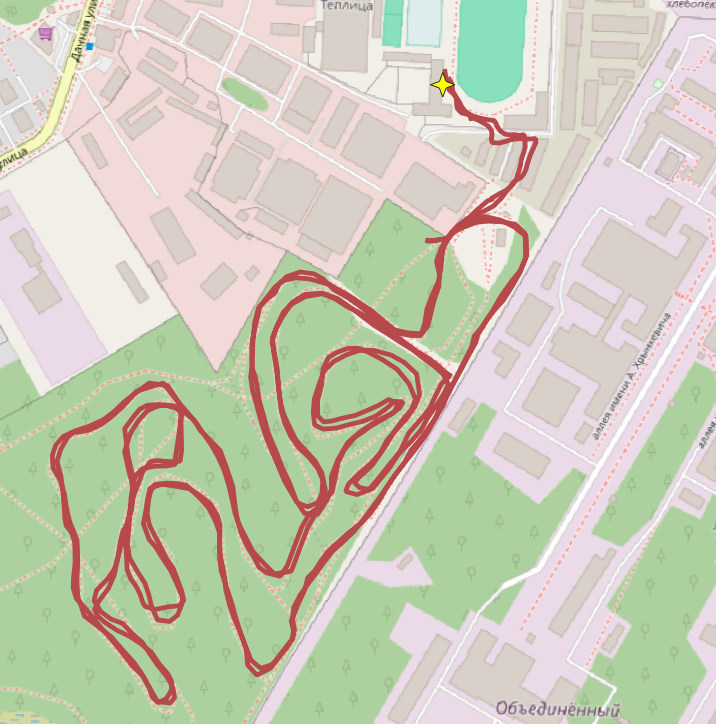
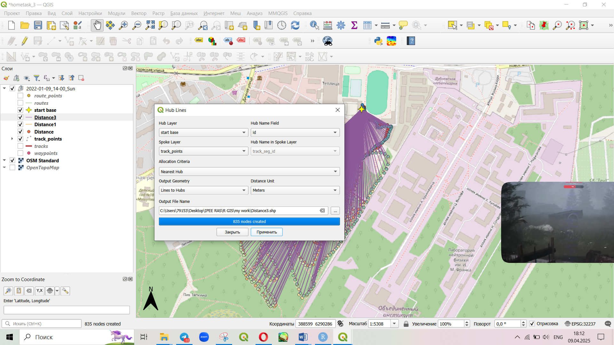
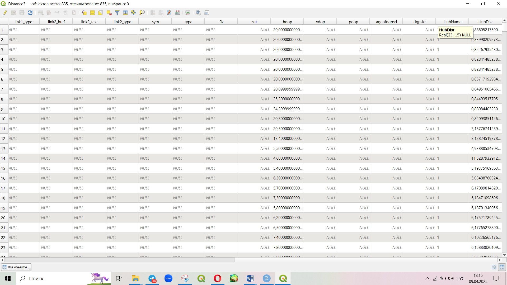
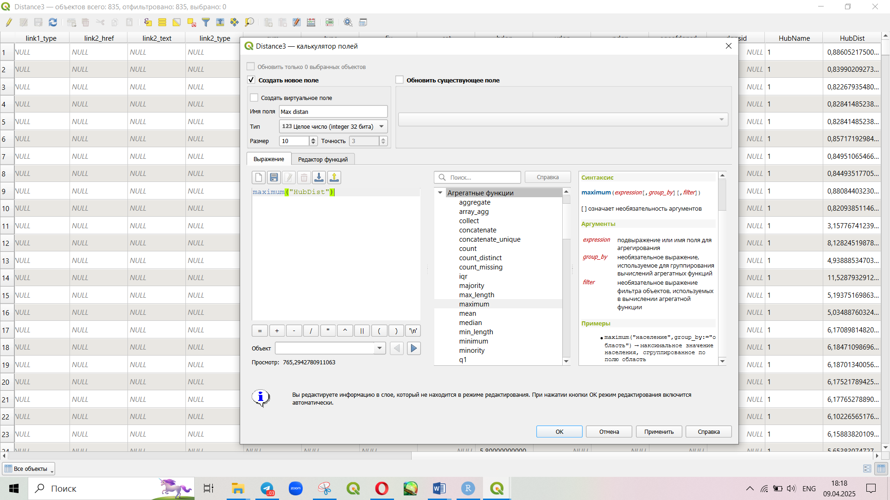
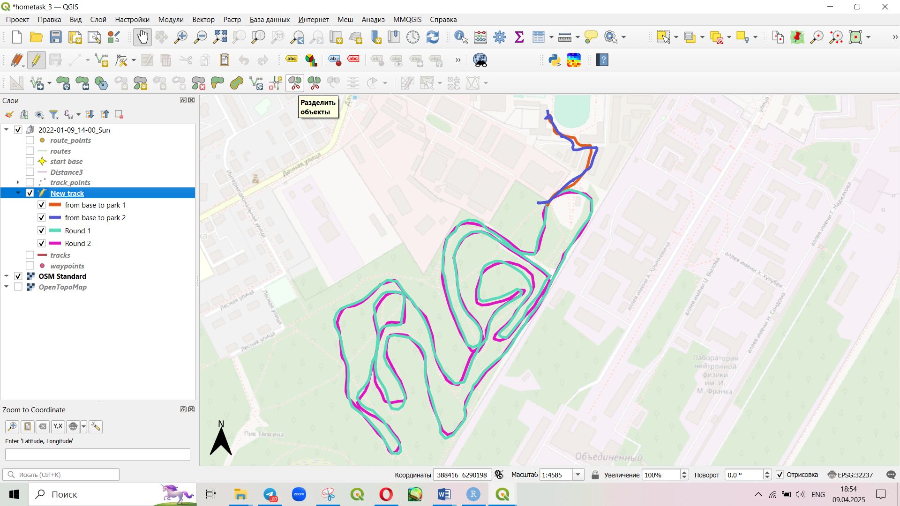
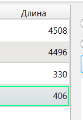
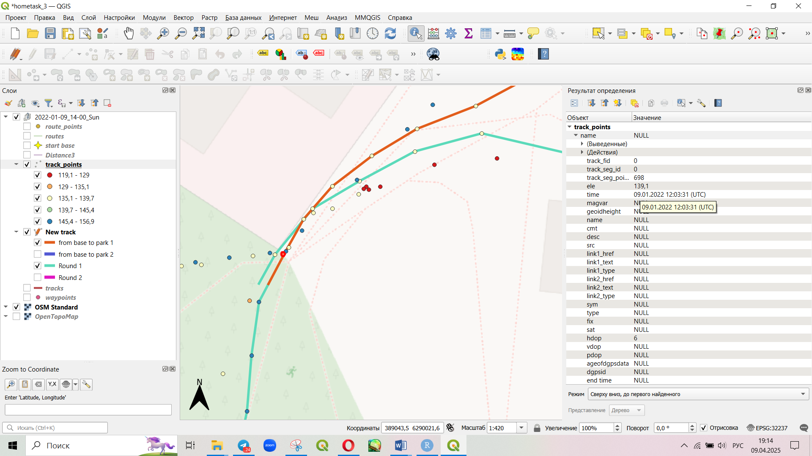

Задание: анализ трэка. Я решила попробовать сделать его именно с помощью QGIS
| Длина всего трека (метры) | Максимальное удаление от базы | Начало маршрута (всего) |
Конец маршрута (всего) |
Длина круга (метры) |
|---|---|---|---|---|
| 9740 | 765 | 09.01.2022 11:00:18 (UTC) | 09.01.2022 12:16:08 (UTC) | 4500 |
| Время начала 1 круга | Время окончания 1 круга | Время начала 2 круга | Время окончания 2 круга | Время прохождения (среднее) |
|---|---|---|---|---|
| 11:09 | 11:36 | 11:36 | 12:03 | 27 минут |
| Скорость средняя | ||||
|---|---|---|---|---|
| 10 км/час |
С помощью калькулятора полей узнаю длину всего маршрута через команду $length , получаю значения в метрах. Подсчет ведется для слоя tracks. Длина всего трека – 9740 м.
Максимальное удаление от базы я решила определить с помощью матрицы расстояний – я для этого создала отдельный слой с точкой где находится база (звездочкой помечена)

C помощью плагина MMQGIS создала слой с линиями расстояний от каждой точки трэка, до старта.

Я получила новый файл, в таблице атрибутов которого появился столбец, в котором демоснтрируется расстояние до «хаба» - до базы.

С помощью калькулятора полей могу узнать максимальное значение в столбце с расстояниями до базы. Maximum (столбец с расстояниями). Аналогично могу узнать и время в слое точек с треками. а еще можно сделать просто фильтром.

Так как в треке нет информации где начинается маршрут, я решила с помощью инструмента разрезать весь трэк на сегменты. Таким действием вышло разрезать не только маршрут в парке на два круга, но и выделить дорогу от парка до базы. Это дает возможность и посчитать длительность каждого участка c помощью $length.
Альтернативный вариант – смотреть на уровень высоты над у.м. прелполагая что асфальт более-менее выравнен, но мне показалось что лучше высмотреть границу парка по карте.

За начало маршрута одного круга я выбрала точки, которые совпадают с моим разделением участков треков

Про вычисление скорости:
В теории, это делается через матрицу расстояний и вычисление временных интервалов.
НО это у меня не получилось по двум причнам.
у меня нет идей, как сделать так, чтобы матрица расстояний учитывала только соседние точки по порядку, а не все рядом расположенные. Потому что при расчете расстояние считается не только между 1 и 2 точкой, но и между 1 точкой и рядом расположенной точкой, которая со второго круга …
Время между точками можно рассчитать по формуле epoch("time (столбец со временем") - epoch("столбец со временем" - 1) , но у меня не хочет эта операция проходить, хотя должна – так как формат данных уже дата/время и все должно работать, но видимо это не так. и я тут так же выходит не могу задание доделать.